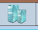
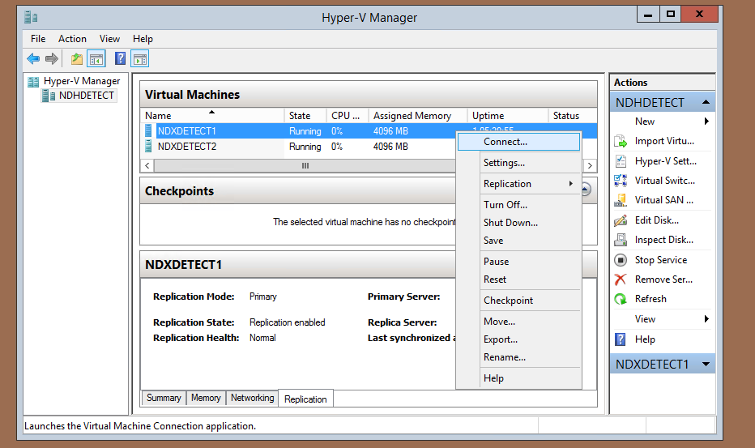
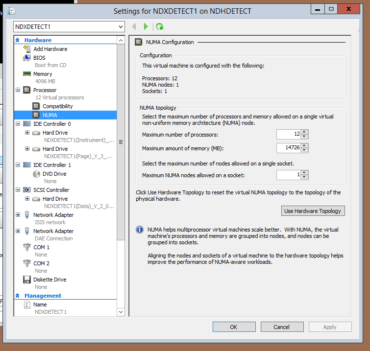
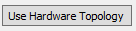

Increase VM memory
Increasing guest VM memory to 14GB (using NDHDETECT as an example).
The basic steps are as below:
log onto the server (via the local Administrator account).
Check that there will still be a minimum of at least 20GB free space on the server C: drive after the increase.
Shut down the VM (
NDXDETECT1in this case).Change the startup/maximum memory setting for the VM in Hyper-V manager to 14GB.
Restart the VM and check that the memory has indeed increased (and that all still works).
Log onto the server
All administration of the Hyper-V system and system settings should be done from the local “Administrator” account for the server (NDH machine), in this case this would be NDHDETECT\Administrator. The password is in the usual place and the remote desktop log on should be done explicitly via the below command to ensure that the log on is not to another account by explicitly asking for a prompt. i.e.
mstsc /v:ndhdetect /admin /prompt
the /admin should ideally be used as it is possible to have more than one concurrent log on on a server and it is always good to be able to get back to the same session (there is only one /admin session).
Check there will be sufficient free disk space on the C: Drive of the instrument server
The space taken by the running VM on the NDH machine’s C: drive will be increased by the amount of extra memory allocated to the machine. So, for example if the machine was 8GB going to 14GB it will take up another 6GB on the system drive. Ensure that the expansion will not take the free space on the C: drive below the minimum of 20GB.
The running VM memory size can be seen from Hyper-V manager. Start this by clicking on

on the toolbar.Shut down the VM to be modified (NDXDETECT1)
Normally there will only be one NDX VM running but in this example there are actually two, we will only increase the memory size for the first one. On the Hyper-V manager window, right click on the VM and select Connect... as shown (or double click). This will open a console window on NDXDETECT1.

If necessary log on to the instrument as .\spudulike, password as normal. Open a console (Command Prompt) window and type
shutdown /f /s /t 0
Wait for the machine to shut down (which it definitely will with no intervention needed), the /f forces shutdown regardless of any questions from applications.
If you normally use Start->Run... to run commands, please type “cmd” and create a fresh command window, don’t run the forced shutdown command directly, it will be remembered as the last Run... command and makes it too easy for a user to accidentally shut down their machine permanently!
Change the startup/maximum memory setting for the VM in Hyper-V manager to 14GB
When the machine has shut down, right click again in Hyper-V manager as before, but this time select Settings... The dialogue shown below will appear.

Navigate to expand the “Processor” settings and select “NUMA”. Click once on the “Use Hardware Topology”

button. The numbers above may change a bit (but likely will not), in either case, select the “Maximum amount of Memory” and copy the figure here. On the “Hardware” pane on left hand side, select “Memory.” Paste the figure you just copied into the box for “Startup RAM:” and clickApply. As long as this completes without error the job is done. Close the window, right click as before on the VM but this time choose Start. Check that the system boots OK, the console window will show the boot process. Ensure that the system is running as it should. You can check in task manager (on the performance tab) to see that the physical memory has now expanded.
Endnote
As the detector testing system is an unusual setup these two virtual machines must share their resources and are both equally important so despite what was shown here, these are now both set to the small IBEX machine minimum of 8GB each with 3.5GB allowed for the server system, i.e. 8GB+8GB+3.5GB which adds up to 19.5GB. If one of the four 8GB DIMMS in the host were to fail, there would be (32-8)GB left i.e. 24GB which would still permit the two machines to continue to function optimally (despite some risk of a crash and reboot if the failing DIMM corrupted memory which was in use).